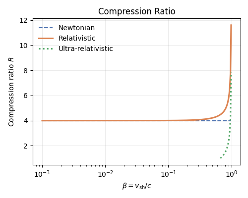
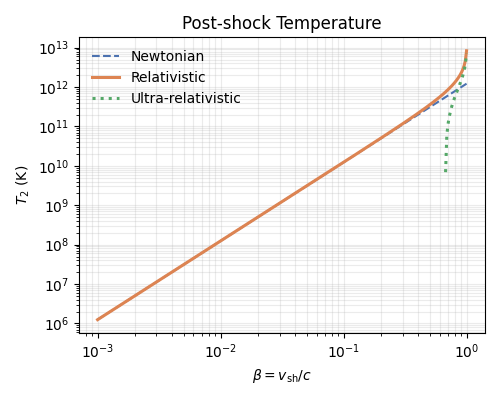
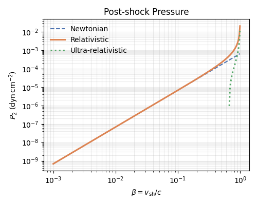

Note
Go to the end to download the full example code.
Rankine–Hugoniot Jump Conditions: Newtonian to Ultra-Relativistic#
What this example does
This example compares Newtonian, relativistic, and ultra-relativistic shock jump-condition solvers across a wide range of shock velocities. By sweeping from \(\beta \sim 10^{-3}\) to relativistic speeds, it shows where classical approximations break down and how the full relativistic solution transitions between regimes.
Shock jump conditions relate the upstream (pre-shock) state to the downstream (post-shock) state via conservation of mass, momentum, and energy.
Trilobite provides a number of solvers for these jump conditions, relevant to a number of different physical regimes and assumptions. In this example, we compare three of them:
StrongColdShockConditions– the Newtonian strong-shock limit, where the compression ratio is a fixed constant \(R = (\hat{\gamma}+1)/(\hat{\gamma}-1)\), independent of shock velocity.RelativisticColdShockConditions– a general relativistic solver valid at any shock velocity, found by numerical root-finding of the full relativistic jump condition.UltraRelativisticColdShockConditions– an analytic approximation for \(\Gamma_1 \gg 1\), where the downstream shock-frame velocity is fixed at \(\beta_2 = \hat{\gamma} - 1\). Only physically valid when \(\beta_{\rm sh} > \hat{\gamma} - 1\).
In this example, we’ll show how these different solvers behave across a few different shock parameters. We apply all three to a cold, stationary CSM across \(\beta = 10^{-3}\) to \(\beta = 0.99\) and compare the predicted compression ratio, post-shock temperature, and post-shock pressure.
See also
Shock Physics in Trilobite for an overview of the shock physics modules and their structure.
The Rankine-Hugoniot Jump Conditions for an overview of the Rankine–Hugoniot jump conditions and the various solvers provided by Trilobite.
Methods: (Non-Relativistic) Jump Conditions for a detailed theoretical discussion of the jump conditions and their derivation.
Methods: (Relativistic) Jump Conditions for a detailed theoretical discussion of the relativistic jump conditions and their derivation.
Physical Setup#
We consider a shock propagating into a cold, stationary circumstellar medium (CSM). This is a common idealization for astrophysical blast waves, such as:
radio supernovae expanding into a stellar wind,
GRB afterglows interacting with the interstellar medium,
TDE outflows impacting ambient gas.
Key assumptions:
The upstream medium is cold (\(P_1 \approx 0\)), so all post-shock thermodynamic quantities are generated by conversion of kinetic energy.
The upstream flow is at rest (\(v_1 = 0\)), so the shock velocity fully determines the relative velocity \(u_1\).
We adopt a relativistic equation of state with \(\hat{\gamma} = 5/3\), appropriate for a relativistic plasma of massive particles.
This setup allows us to isolate how shock physics changes purely as a function of velocity, from the Newtonian to ultra-relativistic regime.
import matplotlib.pyplot as plt
import numpy as np
import astropy.constants as const
import astropy.units as u
from trilobite.dynamics.shocks.core import (
StrongColdShockConditions,
RelativisticColdShockConditions,
UltraRelativisticColdShockConditions,
)
from trilobite.utils.plot_utils import set_plot_style
GAMMA_HAT = 5 / 3.0
c_cgs = const.c.cgs.value
# Typical cold wind CSM density at the shock radius of a radio supernova
rho_csm = 1e-24 * u.g / u.cm**3
Sweeping Shock Velocity#
To compare the different regimes, we vary the shock velocity over several orders of magnitude:
This spans:
Newtonian regime (\(\beta \ll 1\)) — classical strong-shock physics
Trans-relativistic regime (\(\beta \sim 0.1 - 0.5\)) — where relativistic corrections become important
Ultra-relativistic regime (\(\beta \to 1\)) — relevant for GRBs
We evaluate all three solvers at each velocity:
Newtonian strong-shock (analytic, velocity-independent compression)
Full relativistic solver (numerical, valid at all velocities)
Ultra-relativistic limit (analytic, valid only at high Lorentz factor)
The ultra-relativistic solution requires:
Below this threshold, the analytic solution becomes unphysical, so we mask those values.
betas = np.logspace(-3, np.log10(0.99), 300)
shock_velocities = betas * c_cgs * u.cm / u.s
nr_results = [StrongColdShockConditions.solve(v, rho_csm, gamma=GAMMA_HAT) for v in shock_velocities]
rel_results = [RelativisticColdShockConditions.solve(v, rho_csm, gamma_hat=GAMMA_HAT) for v in shock_velocities]
ur_mask = betas > (GAMMA_HAT - 1.0)
ur_results = [
UltraRelativisticColdShockConditions.solve(v, rho_csm, gamma_hat=GAMMA_HAT) for v in shock_velocities[ur_mask]
]
nr_R = np.array([r.compression_ratio for r in nr_results])
rel_R = np.array([r.compression_ratio for r in rel_results])
ur_R = np.array([r.compression_ratio for r in ur_results])
nr_T = np.array([r.post_shock_temperature.to_value(u.K) for r in nr_results])
rel_T = np.array([r.post_shock_temperature.to_value(u.K) for r in rel_results])
ur_T = np.array([r.post_shock_temperature.to_value(u.K) for r in ur_results])
nr_P = np.array([r.post_shock_pressure.to_value(u.dyn / u.cm**2) for r in nr_results])
rel_P = np.array([r.post_shock_pressure.to_value(u.dyn / u.cm**2) for r in rel_results])
ur_P = np.array([r.post_shock_pressure.to_value(u.dyn / u.cm**2) for r in ur_results])
Compression Ratio#
The compression ratio highlights one of the most striking differences between Newtonian and relativistic shocks.
In the classical strong-shock limit, the compression ratio is fixed:
For \(\gamma = 5/3\), this gives \(R = 4\), independent of velocity.
The relativistic solution, however, predicts a velocity-dependent compression, reflecting how energy is redistributed between bulk motion and internal degrees of freedom at high Lorentz factors.
fig, ax = plt.subplots(figsize=(5, 4))
ax.semilogx(betas, nr_R, ls="--", color="#4C72B0", label="Newtonian")
ax.semilogx(betas, rel_R, lw=2.2, color="#DD8452", label="Relativistic")
ax.semilogx(betas[ur_mask], ur_R, ls=":", lw=2.2, color="#55A868", label=r"Ultra-relativistic")
ax.set_xlabel(r"$\beta = v_{\rm sh}/c$")
ax.set_ylabel(r"Compression ratio $R$")
ax.set_title("Compression Ratio")
ax.legend(frameon=False)
ax.grid(alpha=0.25)
plt.tight_layout()
plt.show()

Post-shock Temperature#
In the Newtonian regime, the post-shock temperature scales simply as:
This produces a clean power-law relation. As the shock becomes relativistic, this scaling breaks down, and the temperature grows more slowly as energy is redistributed into relativistic degrees of freedom.
The ultra-relativistic solution again converges only in the \(\Gamma \gg 1\) limit.
fig, ax = plt.subplots(figsize=(5, 4))
ax.loglog(betas, nr_T, ls="--", color="#4C72B0", label="Newtonian")
ax.loglog(betas, rel_T, lw=2.2, color="#DD8452", label="Relativistic")
ax.loglog(betas[ur_mask], ur_T, ls=":", lw=2.2, color="#55A868", label=r"Ultra-relativistic")
ax.set_xlabel(r"$\beta = v_{\rm sh}/c$")
ax.set_ylabel(r"$T_2\ (\mathrm{K})$")
ax.set_title("Post-shock Temperature")
ax.legend(frameon=False)
ax.grid(alpha=0.25, which="both")
plt.tight_layout()
plt.show()

Post-shock Pressure#
The post-shock pressure follows a similar trend to the temperature:
Newtonian: \(P_2 \propto \rho_1 v_{\rm sh}^2\)
Relativistic: modified by Lorentz transformations of energy and momentum
This quantity provides a clear diagnostic of when relativistic corrections become dynamically important (\(\beta \gtrsim 0.3\)).
fig, ax = plt.subplots(figsize=(5, 4))
ax.loglog(betas, nr_P, ls="--", color="#4C72B0", label="Newtonian")
ax.loglog(betas, rel_P, lw=2.2, color="#DD8452", label="Relativistic")
ax.loglog(betas[ur_mask], ur_P, ls=":", lw=2.2, color="#55A868", label=r"Ultra-relativistic")
ax.set_xlabel(r"$\beta = v_{\rm sh}/c$")
ax.set_ylabel(r"$P_2\ (\mathrm{dyn\,cm^{-2}})$")
ax.set_title("Post-shock Pressure")
ax.legend(frameon=False)
ax.grid(alpha=0.25, which="both")
plt.tight_layout()
plt.show()

Total running time of the script: (0 minutes 1.282 seconds)